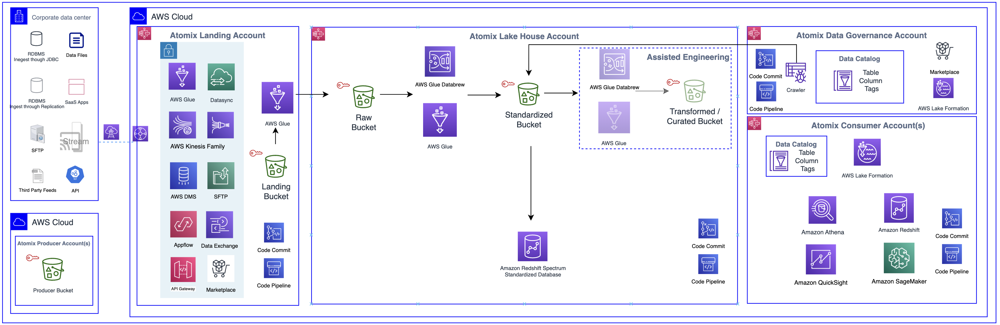

⚡Executive Summary
Atomix transformed enterprise data platform development from a 12-24 month, multi-million dollar custom engineering project into a one-click, configuration-driven deployment taking days. Designed for multi-account AWS environments, it enabled secure data mesh architectures, universal data ingestion, automated governance, and self-service analytics—delivering 80% faster deployment, 80% reduction in engineering effort, 95% faster data access, and 60% lower operational costs while supporting multiple business units at enterprise scale.
📋Situation
The Enterprise-Wide Problem
Enterprise data platform development was a critical bottleneck blocking every data-driven initiative across the organization. Building production-ready data platforms required 12-24 months of custom engineering across 30+ AWS services, while business teams waited weeks for data access—missing market opportunities and delaying strategic decisions. This wasn't a technology problem—it was an organizational barrier preventing enterprises from leveraging data at the speed required for competitive advantage.
The Business Challenge
The data platform crisis manifested across the entire enterprise:
- Time to Value Crisis: Building enterprise data platforms took 12-24 months of development effort, blocking every analytics initiative and missing market windows
- Technical Complexity Barrier: Required deep expertise across 30+ AWS services and data engineering best practices—expertise most organizations didn't have
- Data Silos Blocking Insights: Data scattered across multiple accounts with no easy way to discover or share, preventing cross-functional analytics
- Governance Gaps Creating Risk: No centralized control over data security, PII handling, and access policies—exposing organizations to compliance violations
- Cost Explosion: Manual data engineering and duplicated data across accounts drove operational costs into millions annually
- Data Access Bottleneck: Data requests took weeks or months to fulfill, blocking analytics initiatives and strategic decisions
- Scalability Limitations: Custom-built solutions couldn't scale across multiple business units, requiring complete rebuilds for each tenant
Scale of Impact: This platform-level problem was affecting every data-driven initiative across the enterprise. Organizations were spending millions on data platform development with 12-24 month timelines, while business teams waited weeks for data access—missing critical market opportunities and delaying strategic decisions. Manual data platform development didn't scale—we needed a solution that could deploy production-ready platforms in days while supporting enterprise governance and multi-tenancy requirements.
🎯Task
The Challenge: Scaling Data Platform Delivery Across Enterprise Organizations
The core challenge wasn't building a data lake—it was solving an organizational platform delivery problem that required:
- One-Click Deployment: Transform 12-24 months of custom development into a single-click deployment that creates production-ready platforms in days
- Multi-Account Architecture: Support single, two, and three-account deployment models with proper isolation and governance for different security requirements
- Data Mesh at Scale: Enable multiple producers to share data with multiple consumers without duplication—supporting true data mesh architectures
- Universal Data Ingestion: Support batch, micro-batch, near real-time, and CDC from diverse sources (flat files, RDBMS, streaming) through configuration, not code
- Automated Data Pipeline: Build end-to-end pipelines from landing to raw, standardized, transformed, and curated zones with automated orchestration
- PII Detection & Governance: Automatically identify and handle sensitive data across all datasets while maintaining centralized governance
- Zero-Code Configuration: Enable data engineers to configure ingestion and sharing through UI without writing custom code
- Multi-Tenant Support: Isolate and manage multiple business units on a shared platform with proper security boundaries
The Strategic Imperative: This wasn't about building another data lake—it was about transforming data platform delivery from a multi-year, high-risk engineering project into a repeatable, configuration-driven process that could support enterprise scale. Success meant enabling organizations to deploy production-ready data platforms in days instead of years, while maintaining enterprise-grade governance, security, and multi-tenancy—fundamentally changing how enterprises approached data platform development.
⚙️Action
The Solution Approach
Atomix was built as a comprehensive, configuration-driven framework that transformed data platform delivery from custom engineering to repeatable deployment:
The Architecture
Atomix implements a multi-account data platform architecture with clear separation of concerns:

Key Architecture Highlights
- Multi-Account Flexibility: Supports single, two, and three-account deployment models for different security and governance requirements
- Landing Account: Decouples data ingestion from data lake, providing buffer for inspection and governance before data enters platform
- Lake House Architecture: Central account with four data zones (Raw, Standardized, Transformed, Curated) supporting both data lake and warehouse patterns
- Data Governance Account: Centralized metadata catalog, policy management, and data sharing without duplication
- Producer & Consumer Accounts: Multiple producers publish data, multiple consumers access via Athena/Redshift with role-based access control
- Automated Data Pipeline: End-to-end orchestration from landing through curation with PII detection and format standardization
Technology Stack
AWS Lake Formation
Amazon S3
AWS Glue
AWS Glue DataBrew
Amazon Athena
Amazon Redshift
AWS DMS
AWS DataSync
Amazon Kinesis
AWS Step Functions
AWS Lambda
Amazon DynamoDB
Amazon EventBridge
AWS CloudFormation
AWS Amplify
AWS AppSync
Amazon Cognito
AWS RAM
AWS Organizations
Key Architectural Decisions
1. Configuration-Driven Framework
- Zero-Code Ingestion: Data engineers configure ingestion patterns through UI without writing code
- Declarative Data Sharing: Configure data sharing policies and access controls through configuration
- Template-Based Deployment: CloudFormation templates for repeatable, consistent deployments
- Extensible Architecture: Framework designed to support new ingestion patterns and transformations
2. Multi-Pattern Data Ingestion
- Batch Processing: Scheduled bulk data loads from on-prem sources via DataSync
- Micro-Batch: Frequent small batch loads for near real-time data
- Real-Time CDC: Database Migration Service for change data capture from RDBMS
- Streaming: Kinesis integration for real-time event streams
- Universal Connectivity: Support for flat files, JDBC databases, SaaS apps, SFTP, and APIs
3. Automated Data Pipeline
- Landing to Raw: Automated CDC processing and Parquet conversion with partitioning
- Raw to Standardized: PII detection, data profiling, and format standardization
- Transformed & Curated: Business transformation and consumer-specific curation layers
- Orchestration: Step Functions manage end-to-end pipeline execution with error handling
4. PII & Data Governance
- Automated PII Detection: Glue DataBrew profiles data and identifies sensitive attributes
- PII Standardization: Consistent handling of sensitive data across all datasets
- Metadata Tagging: Automatic tagging of PII attributes for governance
- Lake Formation Integration: Fine-grained access control at column and row level
5. Data Mesh & Sharing
- Resource Access Manager: Cross-account data sharing without duplication
- S3 & Redshift Sharing: Support for both data lake and data warehouse sharing patterns
- Approval Workflows: Configurable approval process for data access requests
- Multi-Consumer Support: Single dataset shared with multiple consumer accounts
6. Self-Service Portal
- AWS Amplify Frontend: Modern React-based UI for platform management
- AppSync API: GraphQL API for real-time data and operations
- Cognito Authentication: Secure user access with role-based permissions
- Operational Metrics: Real-time monitoring of ingestion jobs, data lineage, and platform health
Principal-Level Architectural Decisions
Decision: Configuration-Driven Framework over Custom Code
Rejected: Code-first approach requiring custom Glue jobs for every ingestion pattern
Reason: Configuration-driven approach enabled data engineers without deep coding expertise to deploy pipelines in hours instead of weeks. Targeting 80% of use cases through configuration maximized adoption while maintaining flexibility for complex transformations.
Tradeoff: Limited customization for edge cases, mitigated by allowing custom Glue jobs for the remaining 20% of complex transformations.
Decision: Multi-Account Architecture over Single Account
Rejected: Single-account deployment for operational simplicity
Reason: Enterprise security and compliance requirements demanded account-level isolation between landing, processing, and governance layers. Supporting multiple deployment models (single, two, three accounts) enabled customers to choose based on their risk tolerance.
Tradeoff: Increased architectural complexity and cross-account IAM management, but essential for enterprise adoption and regulatory compliance.
Decision: Parquet Standardization over Format Flexibility
Rejected: Supporting multiple file formats (CSV, JSON, Avro, Parquet) throughout pipeline
Reason: Standardizing on Parquet provided 10x query performance improvement and 70% storage cost reduction through columnar compression. Converting at ingestion time simplified downstream processing and analytics.
Tradeoff: Conversion overhead during ingestion (5-10% processing time increase), but massive gains in query performance and storage costs justified the investment.
Decision: Lake Formation for Access Control over IAM-Only
Rejected: IAM-only access control for simplicity
Reason: Lake Formation's fine-grained access control (column and row level) was essential for true data mesh—enabling secure cross-account sharing without data duplication. IAM alone couldn't provide the granularity required for enterprise data governance.
Tradeoff: Added complexity in permission management and learning curve, but enabled data democratization while maintaining security and compliance.
📊Result
Business Outcomes
80%
Faster Platform Deployment
80%
Reduction in Data Engineering Effort
95%
Faster Data Access Provisioning
60%
Reduction in Operational Costs
The Impact
- Rapid Platform Deployment: Customers deployed complete data platforms in days instead of 12-24 months—80% faster time-to-production
- Zero-Code Configuration: Data engineers configured ingestion patterns through UI without writing custom code—80% reduction in engineering effort
- Accelerated Data Access: Self-service data sharing and approval workflows reduced data access time from weeks to minutes—95% faster provisioning
- Cost Optimization: Eliminated data duplication, reduced manual processing, and optimized storage formats—60% reduction in operational costs
- Enhanced Governance: Centralized PII handling and Lake Formation access control ensured compliance across the enterprise
- Data Democratization: Self-service data discovery and approval workflows enabled broader data-driven decision making
- Scalable Multi-Tenancy: Single platform supporting multiple business units with proper isolation and security
Strategic Impact: Atomix transformed enterprise data platform development from a multi-year, high-risk engineering project into a one-click, configuration-driven deployment. Organizations achieved 80% faster platform deployment, 80% reduction in data engineering effort, and 60% lower operational costs—accelerating time-to-insight and enabling true data mesh architectures at scale.
Industry Recognition
🏆 Gartner 2022 Eye on Innovation Award Finalist
Recognized for innovative one-click data framework implementation at a large GFS enterprise customer, enabling fast data discovery, zero-code data availability, and near real-time secure data access.